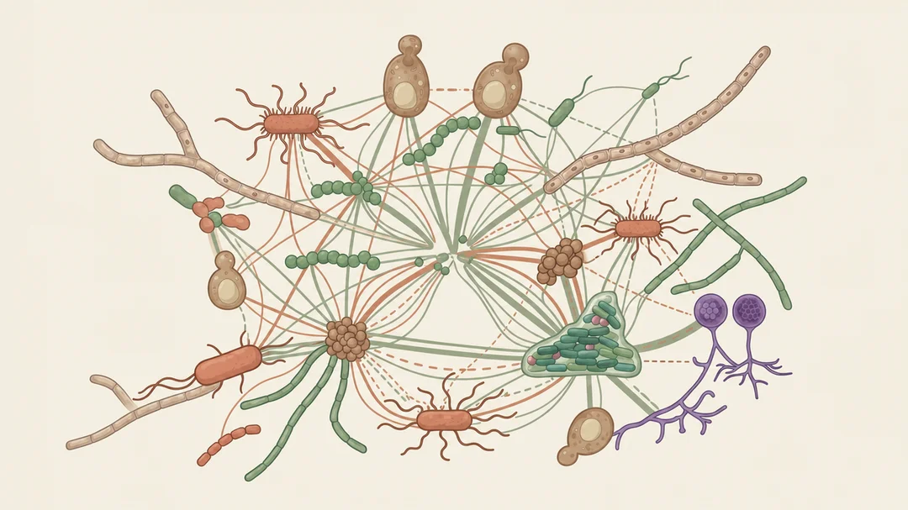
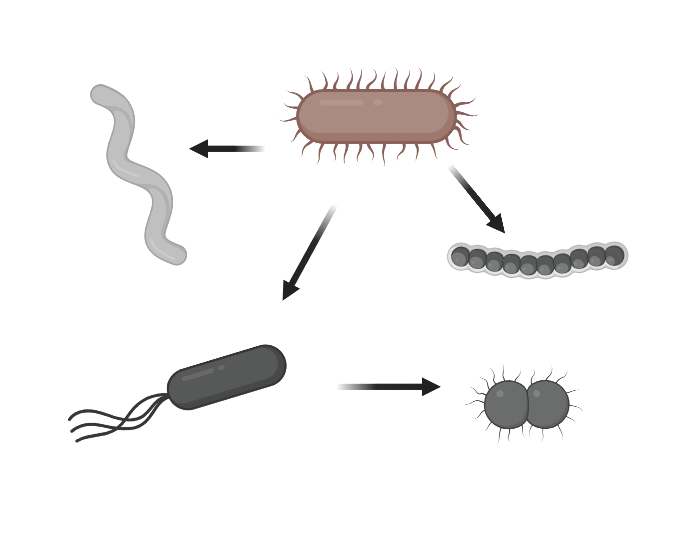
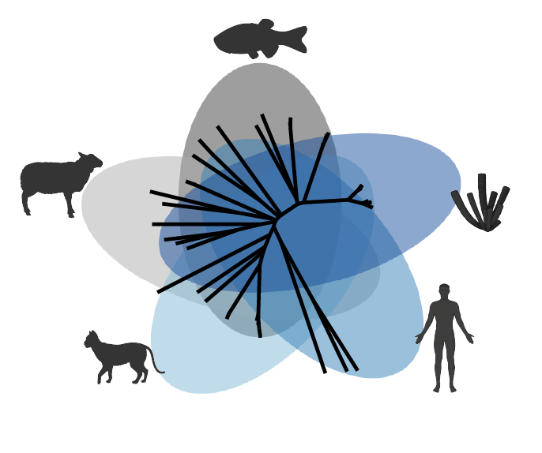
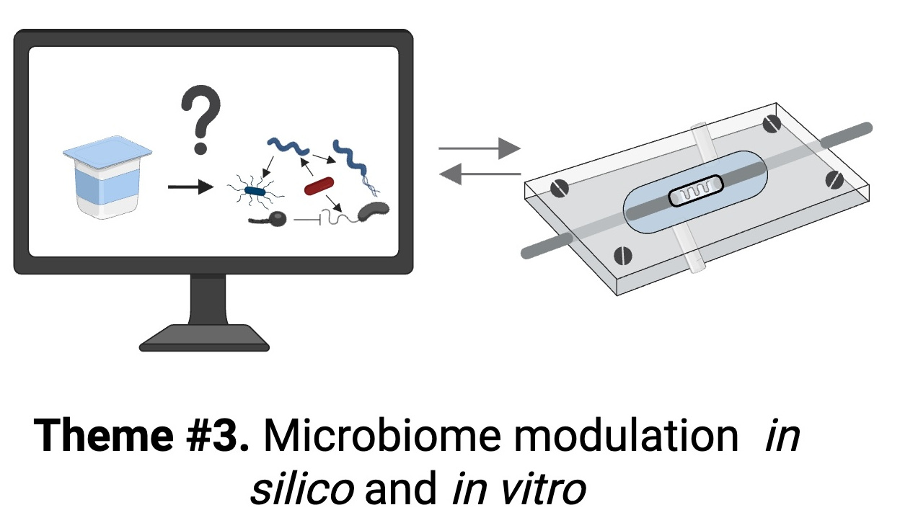

Microbial Networks Lab
Unveiling the interconnectedness of organisms across space and time
Why are organisms where they are, and why do they do what they do? Our work applies an ecological and computational perspective to investigate how microbial communities — and the complex networks that connect them — shape the health of their hosts and ecosystems.
Research Areas

Nutritional interactions in microbiomes
Using metabolic modelling to unveil microbial food-webs.

Host-microbe interactions in evolution
From diversity of symbionts to trait evolution.

Microbiome Selection & Engineering
Combining bioinformatics and experiments to guide microbiome manipulation.
Why Hologenomics?
holo– from Greek holos, meaning "whole, entire, complete"
The 'holobiont' term was popularised by Lynn Margulis and usually refers to a host and the assemblage of organisms living on or within it. The host and microbial genomes of a holobiont are collectively known as a hologenome. Hologenomics therefore refers to studying genomes of entire holobionts, especially the emergent properties that would not be measurable when studied in isolation.